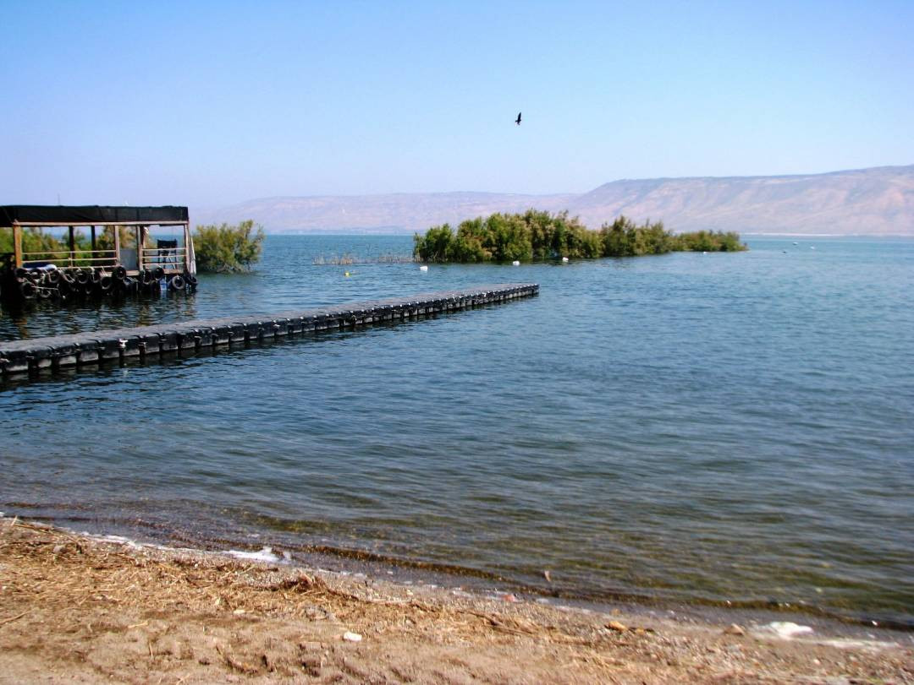

|  | |
The Sea of Galilee (the Kinneret) is a magnificent geographical marvel surrounded by pretty rural agricultural settlements. It’s famous because of its prominence among New Testament writings. The whole of the Galilee is since this is the place where Jesus lived. The Sea of Galilee is one of the earliest settled areas in the Land of Israel. It boasts archaeological ruins sitting alongside some of the first pioneering settlements in Israel. The Kinneret also houses religious sites, modern cities, and endless outdoor pursuits.